Com o apoio de quem acredita na transformação
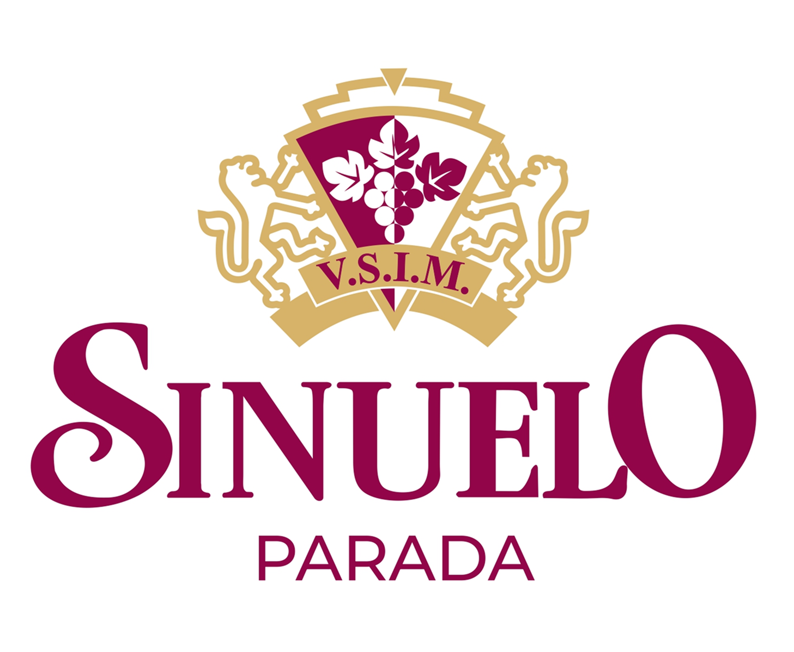
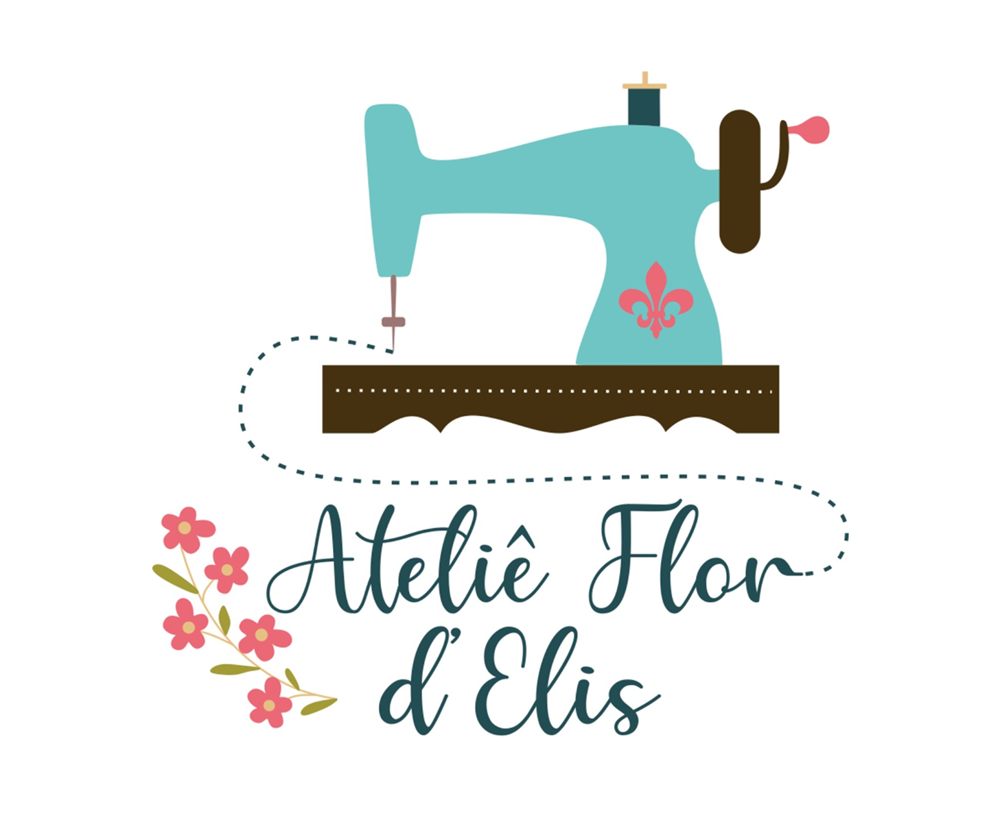
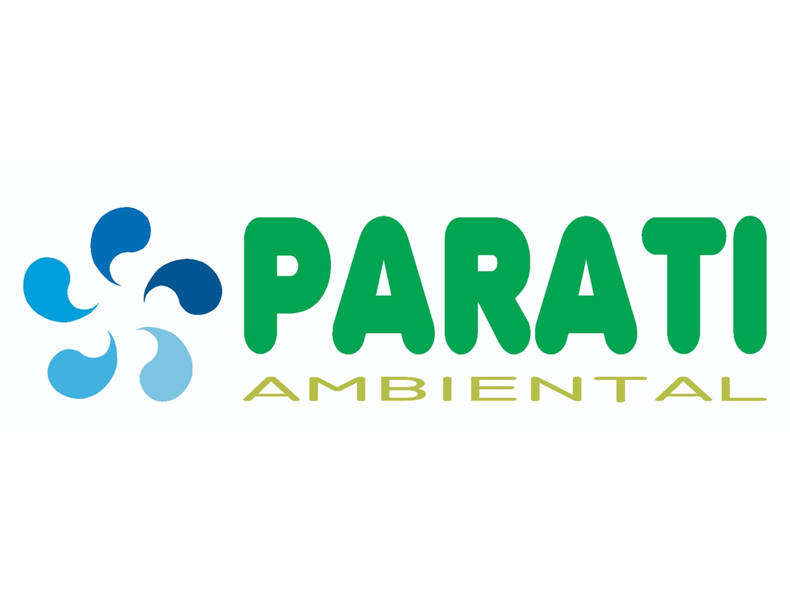
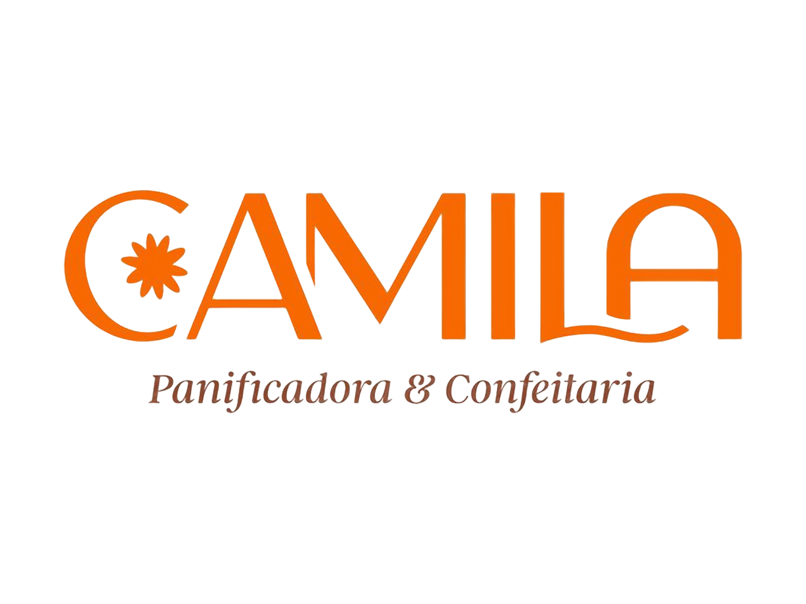
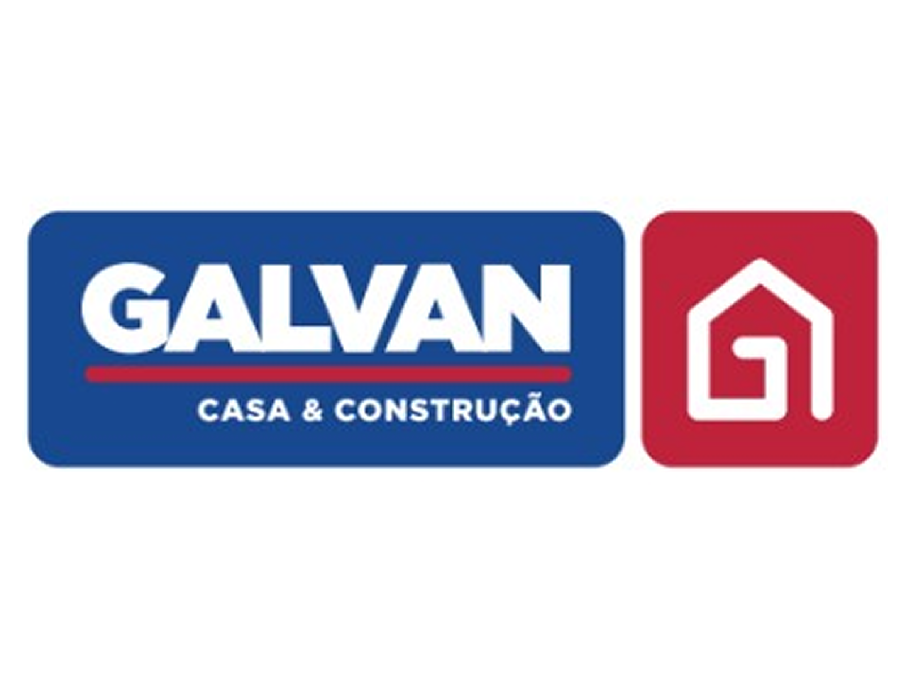
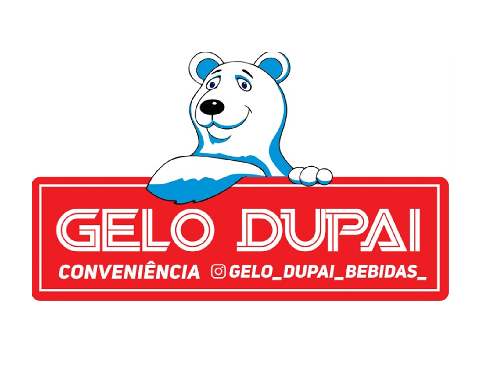
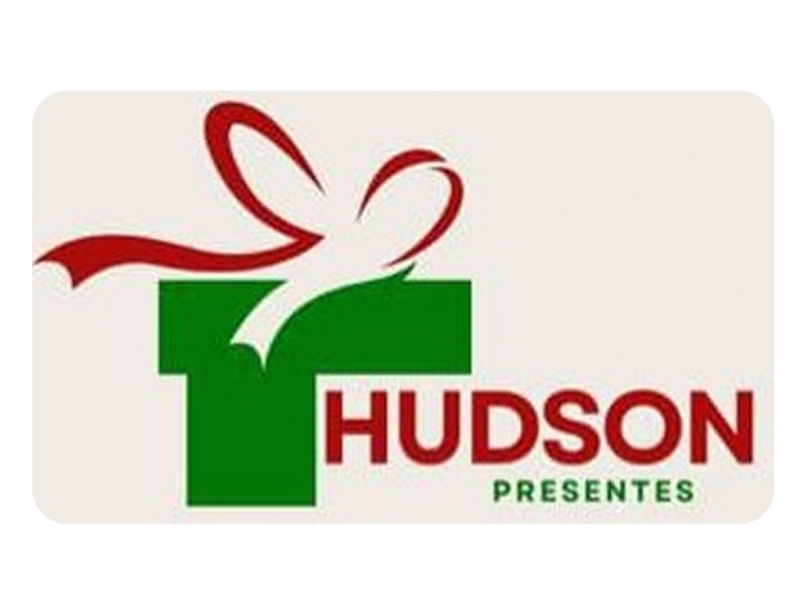
 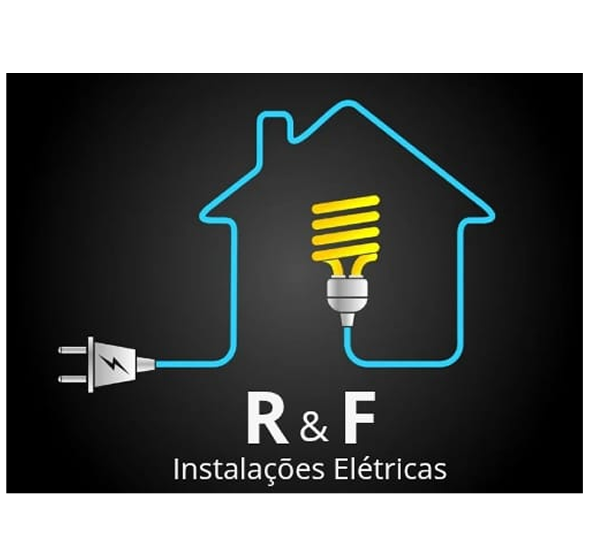
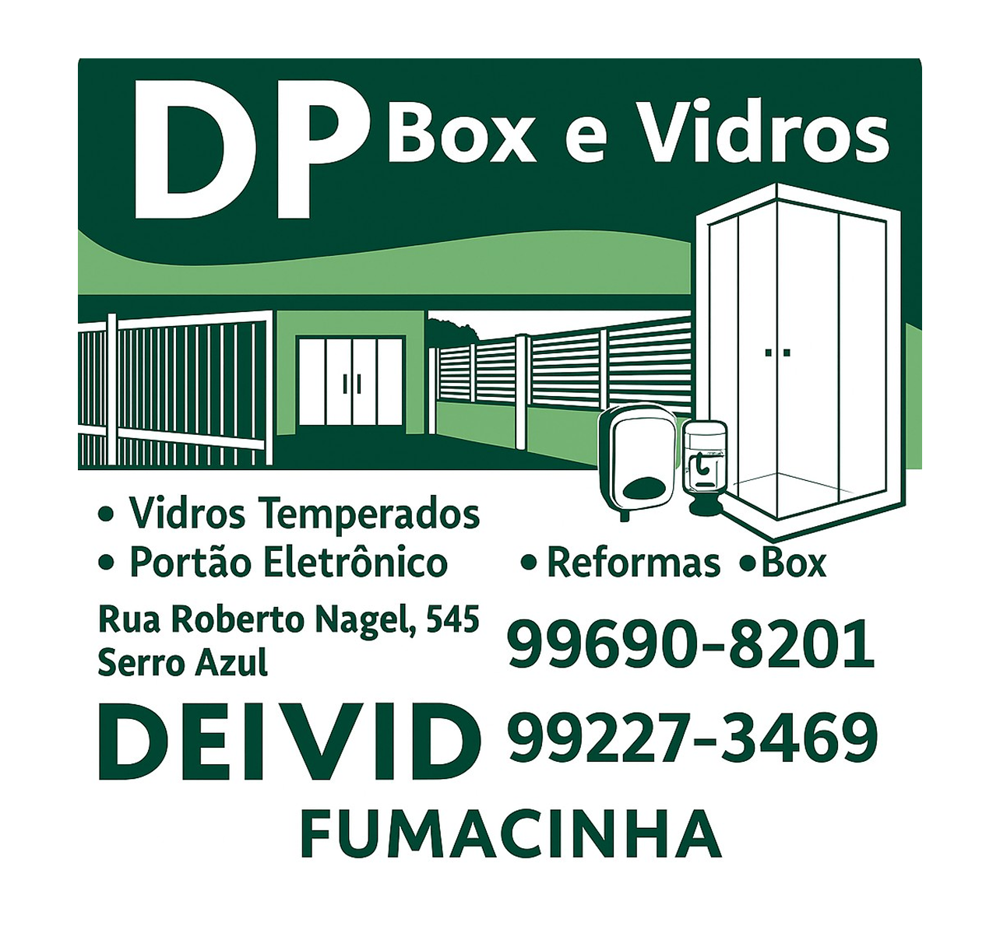
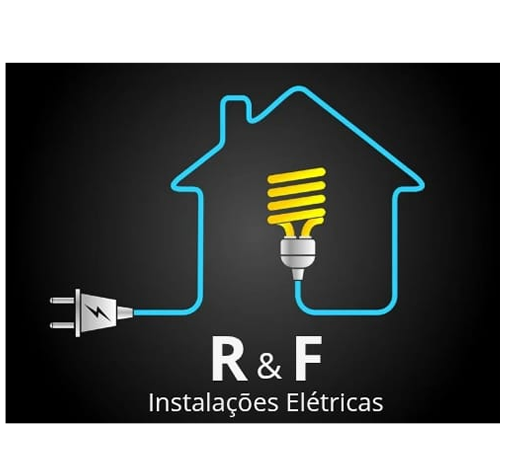
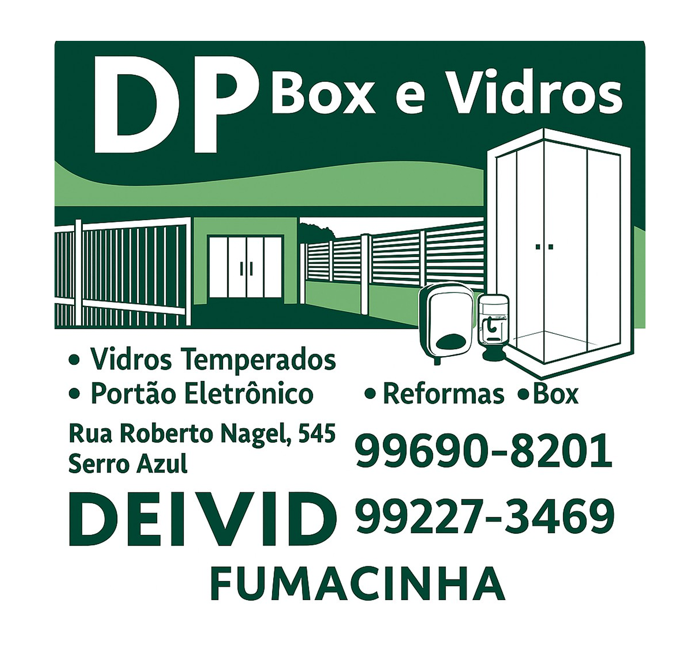
Profissional com mais 15 anos de experiência em TI e Segurança da Informação, atuando em projetos de implantação de softwares de segurança. Atualmente, Diretor de Produtos na iTFLEX Cibersegurança, liderando o desenvolvimento de soluções inovadoras para proteção de dados e infraestrutura crítica. Certificado como Auditor Líder e Implementador em diversas normas ISO (27001, 27701, 22301, 42001) e especialista em governança, continuidade de negócios e privacidade de dados. Atua também como Professor na StackX, formando novos profissionais em Linux, Cloud, DevOps e Segurança.
Bacharel em Tecnologia em Processamento de Dados pela UNIP – Universidade Paulista (1999). Atua desde 1996 em vendas e consultoria de hardware e software, com experiência consolidada em outsourcing de TI desde 2010. Desde 2020 integra a equipe da Seti Tecnologia, onde iniciou como consultor de vendas e, nos últimos dois anos, exerce a função de gestor comercial.
Profissional com mais de 20 anos de experiência em Tecnologia da Informação e uma carreira em cibersegurança e gestão de riscos corporativos. Atualmente é Consultor de Segurança da Informação na Ciser, onde lidera iniciativas estratégicas de proteção de dados, implementação de políticas de conformidade e capacitação de equipes para a cultura de segurança. Com experiência em grandes empresas e projetos críticos, com experiência em datacenters, redes e defesa cibernética, atuando de forma estratégica para enfrentar os desafios do mundo digital.
Profissional instrutor da Polícia Federal, formado em Gestão Pública e Privada. Allyson Souza, casado, pai, empresário, palestrante de alto impacto, especialista em segurança pública e privada pela faculdade FATEG Goiás, instrutor credenciado a Polícia Federal, Examinador DETRAN/SP, ministrante de 16 matérias na área de segurança pública.
Empresário, formado em Marketing, casado e pai de dois filhos. Iniciou sua trajetória pública como vereador, foi vice-prefeito e prefeito de Araquari por dois mandatos, entre 2017 e 2024. Presidiu a Federação dos Municípios de Santa Catarina – FECAM, em 2021. À frente da Prefeitura, liderou a transformação que posicionou Araquari como a cidade que mais cresce em Santa Catarina e uma das principais economias do estado. Sua gestão foi marcada pela atração de grandes empresas, investimentos em infraestrutura e pela defesa do desenvolvimento sustentável e da geração de oportunidades para a população.
Empreendedor formado em BSI pelo IFC, Vinícius iniciou a carreira como programador e se especializou em soluções tributárias. É sócio-fundador e CEO da TS, uma empresa focada em simplificar o cenário tributário brasileiro por meio da tecnologia e inovação.
Atualmente é Coordenador de TI do IFSC - Instituto Federal de Santa Catarina Câmpus Jaraguá do Sul - Rau. Especialista em Gestão de Riscos e CyberSegurança. Especialista em Redes de Computadores. Graduado em Tecnologia de Redes de Computadores pelo IFC - Instituto Federal Catarinense. Possuí vasta experiência em Redes Cisco LAN, Wireless, Segurança de Redes e Dados. Também é especialista em comunicação VoIP, Firewalls, Servidores e Serviços em Linux. Possuí certificações Ubiquit, Furukawa, 3CX, Mikrotik, HikiVision e Intelbras. Presta serviços de consultorias nas diversas área de TI, principalmente VoIP, Wireless e Segurança.
O Instituto Federal Catarinense - Campus Araquari é referência em ensino, pesquisa e extensão, promovendo inovação e formando profissionais preparados para os desafios do futuro.